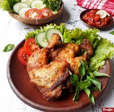
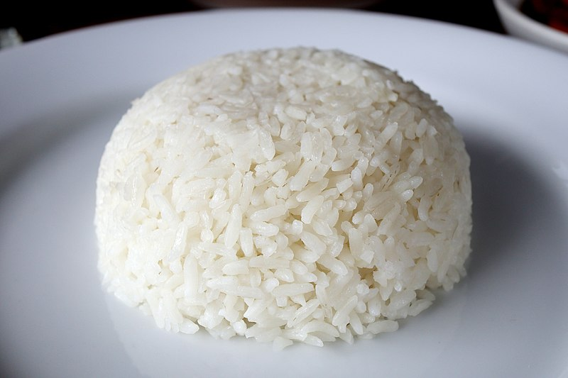

This sate consists of chicken meat marinated in sweet soy sauce and cooked on an open flame grill. It is then served with a spicy peanut or sweet soy sauce, sliced shallots and chopped chillies.
Soto Ayam.............. 15K
Soto ayam is a traditional Indonesian dish which uses ingredients such as chicken, lontong, noodles, and rice vermicelli. Soto ayam is popular in Singapore,[4] Malaysia[5] and Suriname. Turmeric is added as one of its main ingredients which makes the yellow chicken broth. It is one of the most popular variant of soto, a traditional soup commonly found in Indonesian cuisine. Besides chicken and vermicelli, it can also be served with hard-boiled eggs, slices of fried potatoes and Chinese celery leaves. Fried shallots are usually added as garnish. Coconut milk (santan) is also used as an additional ingredient.[6] Koya, a powder of mixed prawn crackers with fried garlic, or sambal is a common topping. Krupuk or emping is also a common topping.
Ayam Goreng ........ 10K

Ayam goreng is an Indonesian and dish consisting of chicken deep fried in oil.
Nasi Putih ............... 5K

An aromatic “long-grain” rice where each grain is about four times as long as it is wide.